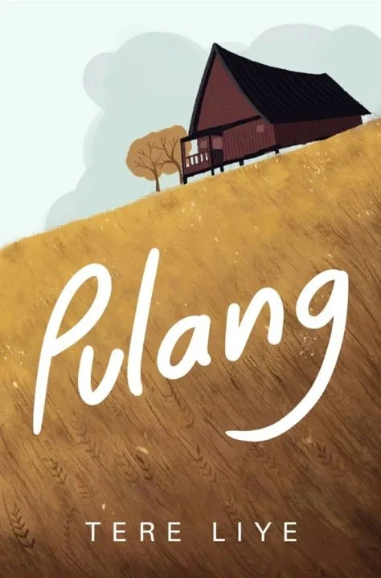

Koleksi Buku
| Judul | Penulis | Jumlah Halaman | Genre | Tahun Terbit |
|---|---|---|---|---|
| Laut Bercerita | Leila S. Chudori | 379 halaman | Fiksi Histori | 2017 |
| 3726 mdpl | Nurwina Sari | 280 halaman | Romance | 2024 |
| Pulang | Tere Liye | 400 halaman | Fiksi Aksi,Petualangan | 2015 |



Cari Buku
Tentang MyLibrary
MyLibrary adalah salah satu web Browser yang berisikan koleksi buku yang dimiliki oleh seorang mahasiswi bernama Nurrahmatia, yang sekarang sedang menempuh pendidikan di perguruan tinggi swasta yang ada di Yogyakarta. Nama MyLibrary itu sendiri berarti 'perpustakaanku' yang terinspirasi oleh jumlah koleksi buku yang dimiliki. Happy Reading All